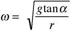

Här är en jämförelse mellan de viktigaste leden i de olika härledningarna för de tre svängningsrörelserna. Symbolerna är de som brukar användas men titta gärna i någon bok för att se figurer. Diskutera gärna tillsammans, säkert finns det svar och motiveringar i hela gruppen till det mesta du kan tänkas undra över nedan.
OBS! Stirra dig inte blind på alla formler! Titta i stället på hur lika det blir på många ställen för dessa tre olika exempel och observera särskilt olikheterna.
Du behöver inte kunna dessa härledningar. Om du gör det och kan redovisa det självständigt, och kanske t.o.m. kan redogöra för likheter och skillnader, är det tydliga kriterier för högre betyg, framförallt VG2, VG4 och MVG2 som jag numrerat dem. Så här kan man tänka för att lösa dessa och många liknande problem:
Vore det inte trevligt att nu testa om svängningstiden stämmer med en "verklig" pendel?
| Fjädersvängning | Matematisk pendel | Konisk pendel | |
| 1. | |||
| 2. | |||
| 3. | |||
| 4. | |||
| 5. |  | ||
| 6. | |||
| 7. | |||
| 8. | (Redan klart, men man kan naturligtvis använda en formel även för r.) |